Doghouses

Lose a game and you are in the doghouse. Get back out by scoring your way clear — and if you cannot, the loss limit eventually ejects you. It is continuous play with a running consequence, which is what stops a social session drifting into pat-ball.
Set the escape points and the loss limit, and TournaQ runs the rest: who is on court, who is queuing, who has just gone in and who has just got out. Every player carries their own record, so the ranking at the end is individual.
Best for
- Sessions with a competitive edge where nobody wants an easy game
- Groups that want continuous play with no downtime between rounds
- Anywhere a bit of jeopardy makes people try harder
Finding it in the app
Doghouses lives under Single Competitions & Socials in the TournaQ Arena. The hub keeps every session you have run, so last week's is two taps away.

The Arena
Every format the app can run, grouped by the kind of session it suits. The number on a card is how many of those you have run.
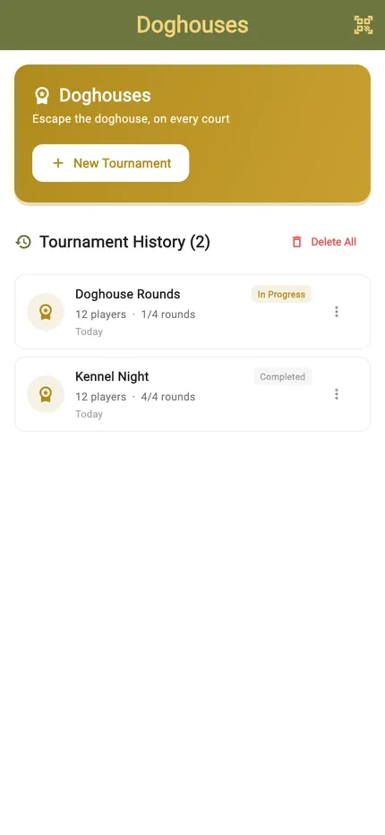
The Doghouses hub
New Tournament starts a session. Below it sits your history, each entry showing the date, the player count and how far it got.
Setting it up
Two numbers define a Doghouse: how many points get you out, and how many losses put you out for good. Everything else is the usual — players, courts, time.
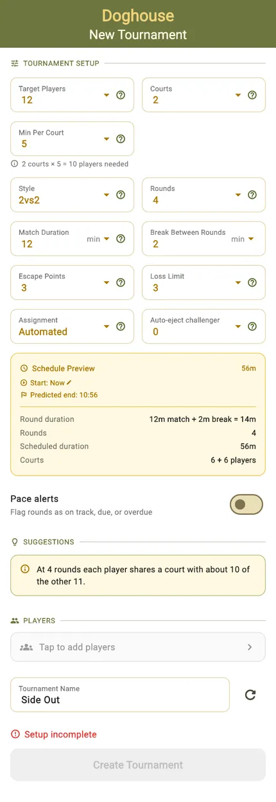
The rules, and the arithmetic
Escape points and the loss limit sit alongside players, courts, rounds and match duration. Change any of them and the Schedule Preview re-does the sums, so the predicted finish time moves as you decide how long you want to play.
Set the escape target low and the doghouse empties fast; set it high and people stay in it, which is usually where the shouting starts.
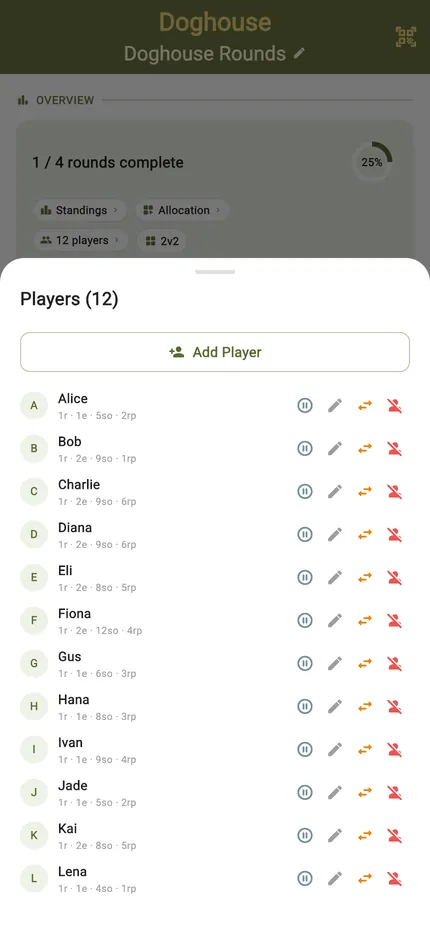
Who is playing
Add players by name, pull them from your saved Players hub, or fill the session with random names to try the format out. The list is editable all the way through the session, not just at the start.
The session at a glance
Once it starts, one screen carries the session: how far along you are, who is on which court, who is sitting out, and when you will be done.
Progress and settings in one row
Rounds complete, a progress ring, and a row of pills — standings, allocation, players, format, escape points, loss limit and estimated finish. A pill with a pencil can still be changed; one with a lock was fixed when play started.
Round by round, or court by court
The schedule groups by round out of the box. Switch it to Court and each court lists its own sequence instead — the view to hand someone refereeing one court all session.
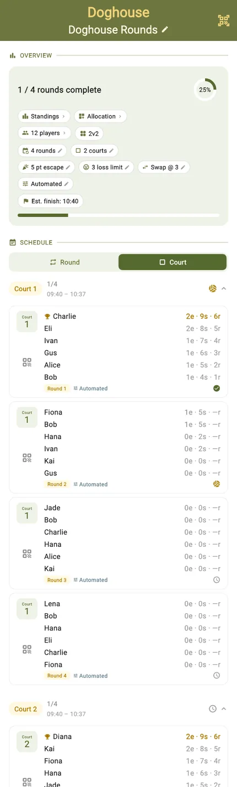
Who is on which court
The allocation grid lays every round against every court. It is the whole session on one screen, and the place you notice someone has been sitting out too often.
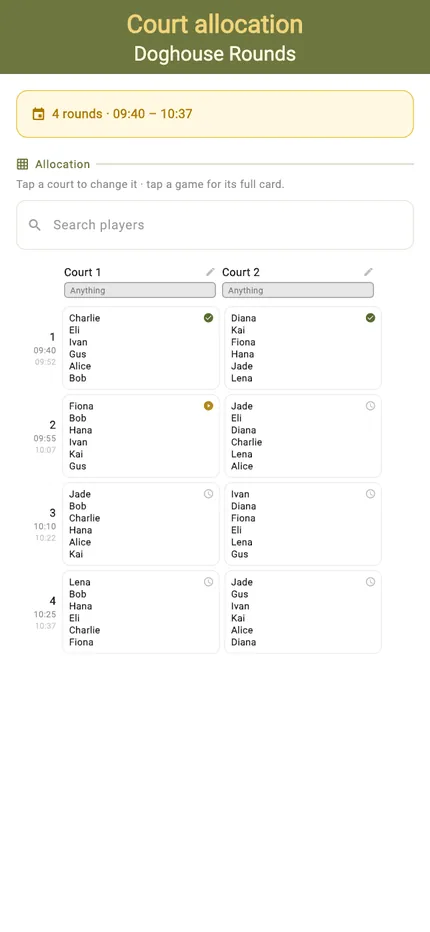
Scoring a match
The scorecard is built for one hand at the side of a court: big targets, the running score, and the rotation handled for you as games finish.
Portrait
Tap a side to award the point. The timer runs in the header, the doghouse state is visible on the card, and undo takes back the last point when the call goes the other way.
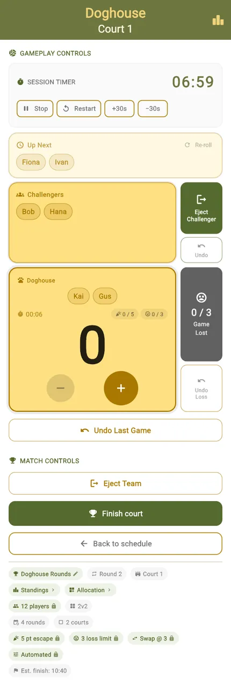
Landscape
Turn the phone and the same controls rearrange for a net post or a table at the side of the court. Nothing is hidden — the layout changes, the functions do not.
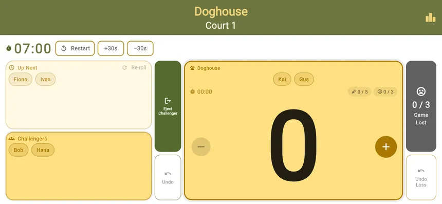
The queue moves itself
When a game ends the next players are rotated in automatically and the card tells you who is up. Nobody has to remember whose turn it was.
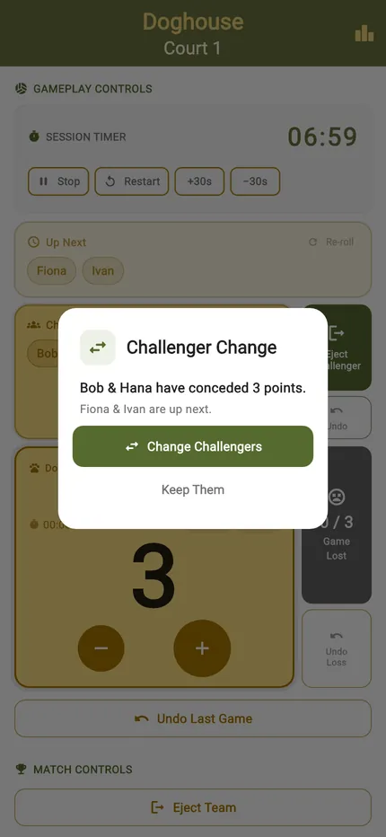
Into the doghouse, and out again
The two moments that define the format, and TournaQ announces both so the court knows where it stands without anyone keeping count.
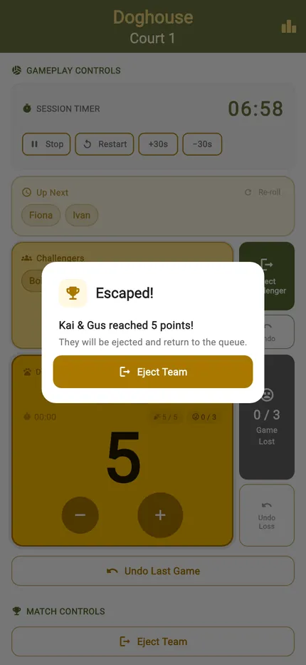
Escaped
Score your way to the escape target and you are out, back into normal play with a clean slate. The dialog names who got out, so the rest of the court knows the pecking order has changed.
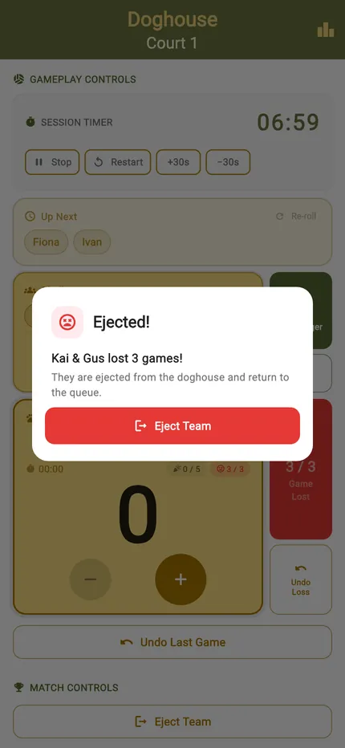
Out on the loss limit
Hit the loss limit and you are ejected from the session. Games already played still count towards the ranking, so a bad run does not erase what came before it.
Standings, live and final
Every player carries their own record, so the ranking is individual even though the teams change all session.
Live standings
Every player with their points, games played and win record, ordered as it stands right now. Players check it between rounds without asking anyone.
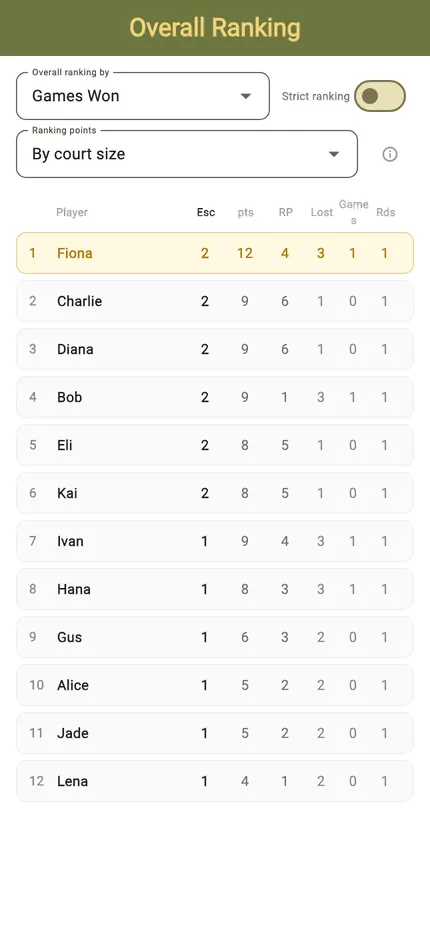
Final rankings
When the last game is in, the table closes with the winner at the top — the player who spent the least time in the doghouse and the most time scoring.
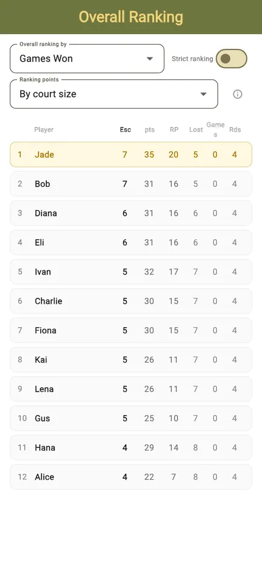
The finished session
The schedule keeps every result. A completed session stays in the hub with all its scores, so a question about last month's session has an answer.
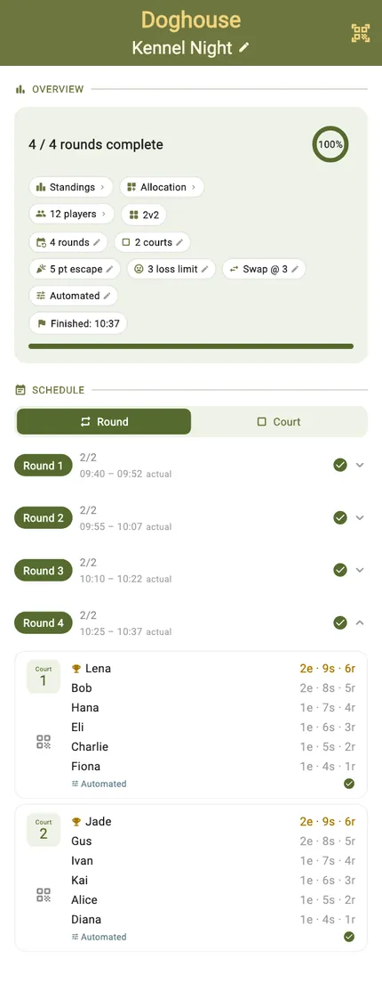
Start to finish
- Open the TournaQ Arena and pick Doghouses.
- Tap New Tournament.
- Set the players, courts and match length, then the escape points and the loss limit.
- Add the players and name the session.
- Tap Create Tournament.
- Open the first match and start the timer.
- Tap a side to award each point; undo takes back the last one.
- Finish the game — the next players rotate on automatically.
- Watch for the escape and ejection announcements as the session runs.
- Play out the rounds and read the final rankings.
Have a question about Doghouses, spotted something missing, or want to suggest an improvement?